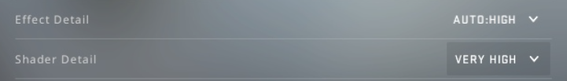
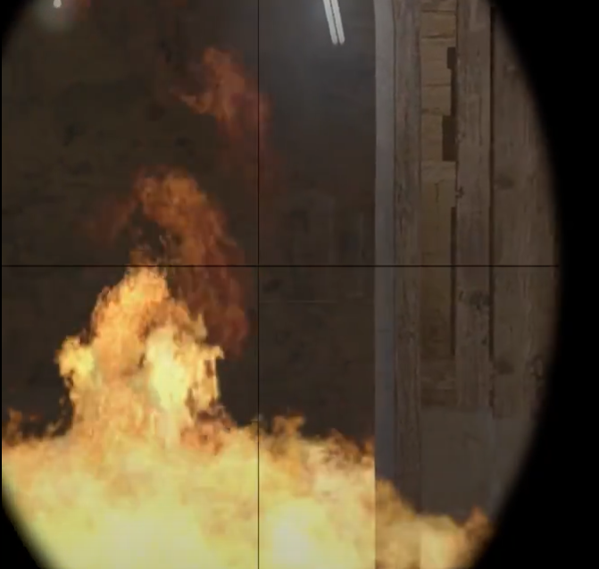
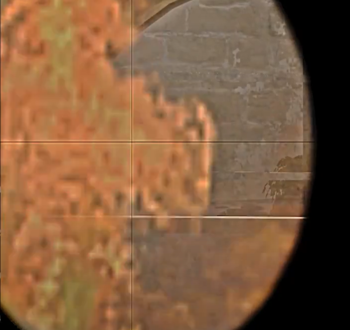
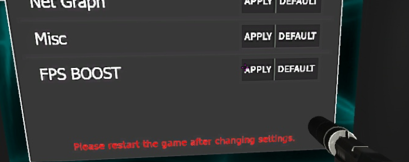
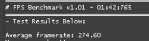
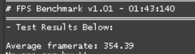

Параметры запуска
В сети можно найти много разных параметров запуска, однако мы сконцентрируемся на самых полезных
-high +mat_hdr_level 0 -noaafonts -noipx -console -novid -nojoy -language english -nosync
Разберем что делает каждый из них:-high
- запускает игру с высоким приоритетом процесса+mat_hdr_level 0
- выключает HDR в игре-noaafonts
- отключает сглаживание шрифтов в игре-noipx
- отключает протокол LAN-console
- включает внутриигровую консоль-novid
- удаляет вступительное видео Valve-nojoy
- отключает поддержку джойстиков-language english
- переключает игру на английский язык, на нем повышается читаемость стоковых шрифтов-nosync
- принудительно отключает вертикальную синхронизациюНастройки графики
Несомненно, в игре мелкие частицы и прочий мусор нам не нужны, однако есть два параметра, которые желательно оставить высокими, и сейчас расскажу почему. Молотов и дым имеют полупрозрачную структуру, через которую на настройках ниже гораздо лучше видно. Остальные настройки можно смело подгонять под себя или ставить минимальные.



Config Generator
Также на карте Config Generator от crashz есть функция fps boost, которая дает еще небольшой прирост к фпс в игре. Также советуем сделать эту манипуляцию, после чего перезагрузить игру.

Результаты до и после оптимизации компьютера

